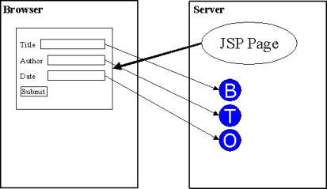
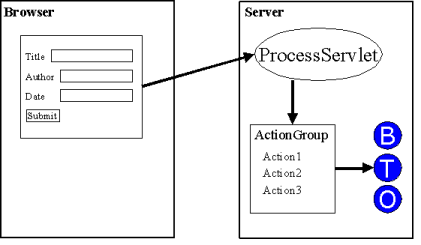
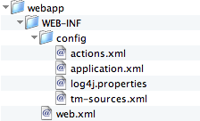
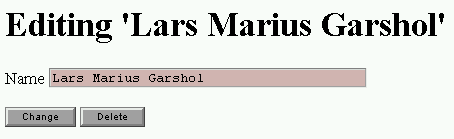
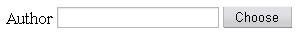
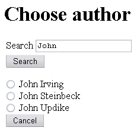
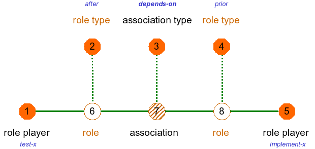

| Published by: | Ontopia |
|---|---|
| Date: | 2013-08-01 |
| Version: | 5.3.0 |
|
This document explains how to set up a new web editor application from scratch, and how to create web editor applications using the Web Editor Framework. Its goal is to teach you the main concepts in the framework so that you can develop your own applications using only the reference documents for support.
Since the Web Editor Framework is an extension of the Navigator Framework it is assumed that you are already familiar with the Navigator Framework. If you are not, you are recommended to start with the Navigator Framework Developer's Guide before continuing with this document.
The Web Editor Framework is a JSP-based framework for developing web applications where the users can modify the contents of a topic map using a forms-based interface. This is done by writing JSP pages which produce HTML pages containing ordinary HTML forms. These forms and the fields in them are connected to actions on the server side which are triggered when the form is submitted.
The actions triggered by a submitted form can create new constructs in the topic map, delete old ones, modify existing ones, and generally do anything you want. The Web Editor Framework comes with an extensive library of actions, documented in The Web Editor Framework: Action Library Reference. In addition, you can easily develop your own and use them in your applications.
In order to get an overview of how the web editor framework actually works, let's walk through one editing operation to see what happens at each stage of the process. The first step is that the user selects a page in the web application, which is then generated in the same way that it would be with the navigator framework. The diagram below shows how this happens.

Figure 1. Editor page generated
The diagram above shows a page being generated by a JSP page on the server and loaded into the browser, where it consists of three form fields and a button. Each of the three form fields is connected with a topic map object on the server-side, in this case a topic name, a topic, and an occurrence. The objects are passed as parameters to the actions, and the framework keeps track of the correspondence between input field names and actions+parameters on the server side.
The next step after this is for the user to edit the information in the form, and then press the "Submit" button. When this happens, the form is submitted back to the ProcessServlet in the web editor framework, which handles the processing of the form. This is done as shown in the diagram below.

Figure 2. Receiving a submitted form
The ProcessServlet when receiving the form will invoke the action group that is connected with the form and pass the form data as well as the parameters provided by the page to the action group. The actions will then be invoked, modifying the topic map, and that completes the editing operation.
There is, however, one more step, and that is to decide what page the user is going to see now. The forwarding logic of the web editor framework is used to decide this, based on configuration provided by the developer. (More on this later.)
Now that the key concepts involved in developing applications with the web editor framework have been introduced we will move on to show how you can build such applications by developing an example.
In order to keep the application simple we will be developing an editor for a topic map that is essentially a project plan, consisting of tasks to be performed, and information about these. For each task, we have a name, tasks it depends on, a person responsible for the task, a deadline date, and a priority. The editing application will allow you to add new tasks, change existing tasks, and so on.
Before we can start building the application, however, we have to set up the environment in which it is to run. We will walk through this step by step, and the diagram below shows a graphical view of the structure we will create.

Figure 3. The directory structure
The first step is to create the directory shown as 'webapp' in the diagram, a directory called $TOMCAT_HOME/webapps/tasked, and inside it, another called WEB-INF. The next step is to copy and paste the example below into a file called web.xml and to put this in the WEB-INF directory.
A minimal web.xml file
<!DOCTYPE web-app
PUBLIC "-//Sun Microsystems, Inc.//DTD Web Application 2.3//EN"
"http://java.sun.com/dtd/web-app_2_3.dtd">
<web-app>
<display-name>TaskEditor</display-name>
<description>Simple example topic map web editor application.</description>
<!-- General web application initialization parameters -->
<context-param>
<param-name>log4j_config</param-name>
<param-value>../omnigator/WEB-INF/config/log4j.properties</param-value>
<description>
Tells the web editor where to find the log4j configuration file.
</description>
</context-param>
<context-param>
<param-name>app_config</param-name>
<param-value>WEB-INF/config/application.xml</param-value>
<description>
Tells the web editor where to find the application configuration file.
</description>
</context-param>
<context-param>
<param-name>action_config</param-name>
<param-value>WEB-INF/config/actions.xml</param-value>
<description>
Tells the web editor where to find the action configuration file.
</description>
</context-param>
<context-param>
<param-name>source_config</param-name>
<param-value>../omnigator/WEB-INF/config/tm-sources.xml</param-value>
<description>
Tells the web editor where to find the topic map
sources configuration file.
</description>
</context-param>
<!-- Declare servlets -->
<servlet>
<servlet-name>WebEditorProcessServlet</servlet-name>
<description>Controller Servlet getting in all requests</description>
<servlet-class>
net.ontopia.topicmaps.webed.servlets.ProcessServlet
</servlet-class>
</servlet>
<servlet-mapping>
<servlet-name>WebEditorProcessServlet</servlet-name>
<url-pattern>/process</url-pattern>
</servlet-mapping>
<!-- Session parameters for this web application -->
<session-config>
<session-timeout>30</session-timeout><!-- in minutes -->
</session-config>
<welcome-file-list>
<welcome-file>index.jsp</welcome-file>
<welcome-file>index.html</welcome-file>
</welcome-file-list>
</web-app>
The next step is to create the start page for the application. A first version of this page is given below.
The index.jsp page
<h1>The task editor</h1> <p>Here is the task editor!</p>
At this point you can start the Tomcat server and connect to http://localhost:8080/tasked/ to see the start page.
The next step is to make sure that we have the necessary configuration and are able to load the topic map. To do this, create a directory called WEB-INF/config, then put the contents of the example below into a file called application.xml.
A minimal application.xml file
<configuration type="application">
<properties>
<property name="defaultCharacterEncoding" value="utf-8"/>
<property name="allowLoadOnRequest" value="true"/>
</properties>
</configuration>
Once this is done, the next step is to check if the tasks.ltm file is present in ${ONTOPIA_HOME}/topicmaps, since we have told our web application to get its topic maps from there (by using the omnigator tm-sources.xml). Now everything is ready, and we can start using the tag libraries.
The first step is to update the index.jsp page as shown below.
The new index.jsp page
<%@ page contentType="text/html; charset=utf-8" %>
<%@ taglib uri='http://psi.ontopia.net/jsp/taglib/tolog' prefix='tolog' %>
<tolog:context topicmap="tasks.ltm">
<title>The task editor</title>
<h1>The task editor</h1>
<table><tr><td valign=top>
<ul>
<li><a href="create-task.jsp">Create new task</a>
<tolog:foreach query="instance-of($TASK, task)?">
<li><a href="task.jsp?id=<tolog:id var="TASK"/>"><tolog:out var="TASK"/></a>
</tolog:foreach>
</ul>
<td valign=top>
<ul>
<li><a href="create-person.jsp">Create new person</a>
<tolog:foreach query="instance-of($PERSON, person)?">
<li><a href="person.jsp?id=<tolog:id var="PERSON"/>"><tolog:out var="PERSON"/></a>
</tolog:foreach>
</ul>
</table>
</tolog:context>
So far we have only created an ordinary navigator application, and the time has now come to start making this into a web editor application. The first step would be to implement the page for editing individual people, which is what we do in the next section.
Once this is set up we are ready to create the page for editing "person" topics. The contents of this page are shown in the example below. (Note that it cannot be loaded before we have added one more file.)
The person.jsp page
<%@ page contentType="text/html; charset=utf-8" %>
<%@ taglib uri='http://psi.ontopia.net/jsp/taglib/tolog' prefix='tolog' %>
<%@ taglib uri='http://psi.ontopia.net/jsp/taglib/webed' prefix='webed' %>
<tolog:context topicmap="tasks.ltm">
<tolog:set var="person" reqparam="id"/>
<tolog:set var="name" query="topic-name(%person%, $NAME)?"/>
<title>Editing '<tolog:out var="person"/>'</title>
<h1>Editing '<tolog:out var="person"/>'</h1>
<webed:form actiongroup="person">
<p>Name
<webed:field action="set-name" params="name person" type="tfs">
<tolog:if var="name"><tolog:out var="name"/></tolog:if>
</webed:field>
</p>
<webed:button action="person" text="Change"/>
<webed:button action="delete-person" text="Delete" params="person"/>
</webed:form>
</tolog:context>
The interesting parts of this page are the webed tags which set up the form used to change the name of the person. The main tag is the webed:form tag, which creates the form in which all of the components are placed. The actiongroup attribute gives the name of the action group which will handle the form when it is submitted. This action group is declared in the actions.xml file, which will be explained shortly.
The next part of interest is the webed:field tag, which creates a text input field. The content of the tag produces the initial content of the field, and the value that the user writes there will be set as the new value of the name. The action attribute gives the name of the action which will handle this form field when the form is submitted (the set-name action is declared in the actions file), while the type attribute tells the tag what template to use for this field (also declared in the actions file).
A very important attribute is the params attribute which contains the names of variables that will be passed to the action when the form is submitted. The first parameter holds the base name that is to be modified. This is necessary in order for the action to know which topic name to modify. The second parameter holds the topic that owns the topic name in case the base name has not been created yet. The action will then create a new base name, but will need to know what topic to attach it to.
Finally, we produce two buttons for the user to press. Each of these have actions associated with them (given in the action attribute) as well as objects (in the params attribute) and a label for the button (in the text attribute). The first button submits the changed page to the editor, while the second button deletes the current topic. (This is why the second button needs the current topic as a parameter: it needs to know what topic to delete.)
The result, once we add the actions file, will be the page shown in the diagram below.

Figure 4. Editing a person
The last piece necessary to make this work is the actions.xml file, to be added to the WEB-INF/config directory as shown below.
The actions.xml file
<actionConfig>
<!--~~~~~~~~~~~~~~~~~~~~~~~~~~~~~~~~~~~~~~~~~~~~~~~~~~~~~~~~~~~~~~~~
Global mapping between class short name and fully qualified Java
class name.
~~~~~~~~~~~~~~~~~~~~~~~~~~~~~~~~~~~~~~~~~~~~~~~~~~~~~~~~~~~~~~~~-->
<classMap>
<class shortcut="DummyAction"
fullname="net.ontopia.topicmaps.webed.impl.actions.DummyAction"/>
<class shortcut="ActionTopicMapCreateTopic"
fullname="net.ontopia.topicmaps.webed.impl.actions.topicmap.CreateTopic"/>
<class shortcut="ActionSetBasenameValue"
fullname="net.ontopia.topicmaps.webed.impl.actions.basename.SetValue"/>
<class shortcut="ActionDelete"
fullname="net.ontopia.topicmaps.webed.impl.actions.tmobject.Delete"/>
<class shortcut="ActionSetOccValue"
fullname="net.ontopia.topicmaps.webed.impl.actions.occurrence.SetValue"/>
<class shortcut="AssignRolePlayer"
fullname="net.ontopia.topicmaps.webed.impl.actions.association.AssignRolePlayer"/>
</classMap>
<!--~~~~~~~~~~~~~~~~~~~~~~~~~~~~~~~~~~~~~~~~~~~~~~~~~~~~~~~~~~~~~~~~
Global mapping between field short name and field properties
like type and dimension used by action fields.
~~~~~~~~~~~~~~~~~~~~~~~~~~~~~~~~~~~~~~~~~~~~~~~~~~~~~~~~~~~~~~~~-->
<fieldMap>
<field name="tfs" type="text" columns="39" maxlength="255"/>
<field name="tfm" type="text" columns="50" maxlength="255"/>
<field name="tfl" type="textarea" columns="50" rows="3"/>
</fieldMap>
<!--~~~~~~~~~~~~~~~~~~~~~~~~~~~~~~~~~~~~~~~~~~~~~~~~~~~~~~~~~~~~~~~~
Global forward definitions
used for an action if not explicitly defined forward exists.
~~~~~~~~~~~~~~~~~~~~~~~~~~~~~~~~~~~~~~~~~~~~~~~~~~~~~~~~~~~~~~~~-->
<globalForwards>
<forward name="frontpage" path="index.jsp"/>
</globalForwards>
<!--~~~~~~~~~~~~~~~~~~~~~~~~~~~~~~~~~~~~~~~~~~~~~~~~~~~~~~~~~~~~~~~~
Action group for "person" topics
~~~~~~~~~~~~~~~~~~~~~~~~~~~~~~~~~~~~~~~~~~~~~~~~~~~~~~~~~~~~~~~~-->
<actionGroup name="person">
<!-- actions related to form input fields -->
<action name="set-name" class="ActionSetBasenameValue"/>
<!-- principal actions -->
<action name="person" class="DummyAction"/>
<action name="delete-person" class="ActionDelete" exclusive="true"/>
<!-- Define forward rules -->
<forwardRules>
<forwardDefault path="person.jsp"/>
<forwardRule action="delete-person" forward="frontpage"/>
</forwardRules>
</actionGroup>
</actionConfig>
The first part of the file (the classMap) declares shorter names for the Java classes used in the rest of the file. After this comes a declaration of the field types referenced from the webed:field tag (the fieldMap part).
After this follows global forwarding rules used by the ProcessServlet to decide where to send the user in cases where the action group does not declare explicit rules. In this case the only declaration we have is that the frontpage name is an alias for the index.jsp page. The idea with this is that it makes it possible to change the front page without having to change all forwarding rules that point to this page in the whole application.
Finally comes the declaration of the action group which corresponds to our page for editing "person" topics. The first declares our input field and maps it to the ActionSetBasenameValue action. This action takes a topic name object and sets its string value to that passed from the input field when the form is submitted.
The next is two actions, which correspond to the two buttons we declared. The first is the DummyAction, which is used for the "Submit" button, and which does nothing (the other actions take care of everything when you press this button). The second is the ActionDelete, which deletes a topic from the topic map.
Note that the delete-person action has been defined as exclusive. What this means is that if this action is triggered only it should run, and no other actions. This ensures that we don't waste time updating a topic that is to be deleted anyway, and also avoids problems if the delete-person action is not executed last (the other actions will then attempt to update objects which are no longer there). The last problem could be solved in this case by placing the action last in the group (since actions are executed in the order they are given), but this is not always possible.
Finally, we have the forwarding rules. The default is for the user to get the same person.jsp page back, but if the delete-person action is triggered we go to the front page instead.
And that's it. This is a complete page for editing topics of a particular type. You've now seen the main parts of the framework, and the rest of this guide is just about how to handle more kinds of situations.
The next step is to make it possible to create new people. To do this we need to modify the start page so that we can trigger action groups on the server that contain the necessary actions. This is done by creating little forms whose buttons trigger create actions. The new start page is shown below.
The new index.jsp
<%@ page contentType="text/html; charset=utf-8" %>
<%@ taglib uri='http://psi.ontopia.net/jsp/taglib/tolog' prefix='tolog' %>
<%@ taglib uri='http://psi.ontopia.net/jsp/taglib/webed' prefix='webed' %>
<tolog:context topicmap="tasks.ltm">
<tolog:set var="topicmap" query="topicmap($TM)?"/>
<tolog:declare>
using t for s"#"
</tolog:declare>
<title>The task editor</title>
<h1>The task editor</h1>
<table><tr><td valign=top>
<ul>
<li><webed:form actiongroup="create-task">
<webed:button action="create-task" params="topicmap t:task"
text="Create task"/>
</webed:form>
<tolog:foreach query="instance-of($TASK, task)?">
<li><a href="task.jsp?id=<tolog:id var="TASK"/>"
><tolog:out var="TASK"/></a>
</tolog:foreach>
</ul>
<td valign=top>
<ul>
<li><webed:form actiongroup="create-person">
<webed:button action="create-person" params="topicmap t:person"
text="Create person"/>
</webed:form>
<tolog:foreach query="instance-of($PERSON, person)?">
<li><a href="person.jsp?id=<tolog:id var="PERSON"/>"
><tolog:out var="PERSON"/></a>
</tolog:foreach>
</ul>
</table>
</tolog:context>
The only change here is that we have added buttons to create new topics, and provided them with parameters: the containing topic map, and the type of the new topic, in that order. Note how the second parameter has a name beginning with t: in both cases; this makes use of the tolog URI prefix we declared with tolog:declare to refer to the topic type without having to create a variable for it. Using this parameter we can actually create topics that are instances of "person" and "task" as opposed to completely blank topics.
For this to work we need to add two more action groups after the first one in actions.xml:
Two new action groups
<!--~~~~~~~~~~~~~~~~~~~~~~~~~~~~~~~~~~~~~~~~~~~~~~~~~~~~~~~~~~~~~~~~
Action group for creating new people
~~~~~~~~~~~~~~~~~~~~~~~~~~~~~~~~~~~~~~~~~~~~~~~~~~~~~~~~~~~~~~~~-->
<actionGroup name="create-person">
<action name="create-person" class="ActionTopicMapCreateTopic"/>
<!-- Define forward rules -->
<forwardRules>
<forwardDefault path="person.jsp"/>
</forwardRules>
</actionGroup>
<!--~~~~~~~~~~~~~~~~~~~~~~~~~~~~~~~~~~~~~~~~~~~~~~~~~~~~~~~~~~~~~~~~
Action group for creating new tasks
~~~~~~~~~~~~~~~~~~~~~~~~~~~~~~~~~~~~~~~~~~~~~~~~~~~~~~~~~~~~~~~~-->
<actionGroup name="create-task">
<action name="create-task" class="ActionTopicMapCreateTopic"/>
<!-- Define forward rules -->
<forwardRules>
<forwardDefault path="task.jsp"/>
</forwardRules>
</actionGroup>
Notice how in both cases we forward the user onto the page for editing topics of the given type, so that having created the topic we can edit it immediately. (The framework takes care of setting the right request parameters to pass the object ID to the editing pages.)
The next step is to start editing tasks, and this can be done quite easily by taking person.jsp as the starting point. This enables us to edit the name of the task, and then we only have to add the rest. As a first step we will add a description occurrence and an association to the person responsible for the task. The resulting JSP is shown below.
The task.jsp page
<%@ page contentType="text/html; charset=utf-8" %>
<%@ taglib uri='http://psi.ontopia.net/jsp/taglib/tolog' prefix='tolog' %>
<%@ taglib uri='http://psi.ontopia.net/jsp/taglib/webed' prefix='webed' %>
<tolog:context topicmap="tasks.ltm">
<tolog:set var="task" reqparam="id"/>
<tolog:declare>
using t for s"#"
</tolog:declare>
<title>Editing '<tolog:out var="task"/>'</title>
<h1>Editing '<tolog:out var="task"/>'</h1>
<webed:form actiongroup="task">
<tolog:set var="name" query="topic-name(%task%, $TN)?"/>
<tolog:set var="description"
query="occurrence(%task%, $OCC), type($OCC, description)?"/>
<tolog:set var="people" query="instance-of($PERSON, person)?"/>
<tolog:set var="person"
query="assigned-to(%task% : assignment, $P : responsible)?"/>
<tolog:set var="assign-assoc"
query="select $A from
role-player($R, %task%),
association-role($A, $R),
type($A, assigned-to)?"/>
<table>
<tr><td>Name
<td><webed:field action="set-name" params="name task" type="tfs">
<tolog:if var="name"><tolog:out var="name"/></tolog:if>
</webed:field>
<tr><td>Description
<td><webed:field action="set-int-occurrence" type="tfs"
params="description task t:description">
<tolog:if var="description"><tolog:out var="description"/></tolog:if>
</webed:field>
<tr><td>Responsible person
<td><webed:list action="assign-player"
params="assign-assoc t:assigned-to task t:assignment t:responsible"
collection="people" selected="person"/>
</table>
<webed:button action="task" text="Change"/>
<webed:button action="delete-task" text="Delete" params="task"/>
</webed:form>
</tolog:context>
On this page we've added a second webed:field for the description occurrence. This is very similar to that for the name, but uses a different action and also adds a parameter, so that the action can give the occurrence its type, if it has to create it for us.
The responsible person, however, is different, since in this case we don't want a text field, but a list of alternatives. This is done with the webed:list tag, which is similar to webed:field, but adds some new things. Here, we no longer produce the contents of the list using tolog:* tags, but instead pass it a variable containing the alternatives (this is what the collection attribute does). This is used by the tag to produce a drop-down list. The optional selected attribute holds the currently selected topic, if there is one.
The action used in this case will take an association as its object and assign a player to a specific role, creating the association if it does not already exist. This is why the params attribute contains so many values. The values are, in order, the association type, the role player on this side, the role of this topic, and the role of the topic being selected. This information is used both to select the right role to assign to and also to create new associations, if necessary.
At this point, the only thing that remains is to update the actions file with the action group for this page, as shown below.
Action group for tasks
<!--~~~~~~~~~~~~~~~~~~~~~~~~~~~~~~~~~~~~~~~~~~~~~~~~~~~~~~~~~~~~~~~~
Action group for "task" topics
~~~~~~~~~~~~~~~~~~~~~~~~~~~~~~~~~~~~~~~~~~~~~~~~~~~~~~~~~~~~~~~~-->
<actionGroup name="task">
<!-- actions related to form input fields -->
<action name="set-name" class="ActionSetBasenameValue"/>
<action name="set-int-occurrence" class="ActionSetOccValue"/>
<action name="assign-player" class="AssignRolePlayer"/>
<!-- principal actions -->
<action name="task" class="DummyAction"/>
<action name="delete-task" class="ActionDelete" exclusive="true"/>
<!-- Define forward rules -->
<forwardRules>
<forwardDefault path="task.jsp"/>
<forwardRule action="delete-task" forward="frontpage"/>
</forwardRules>
</actionGroup>
At this point the application is usable, if not very useful. Most of what remains is more of the same as what you have already seen, so the design of the application from this point on will be aimed more at showing you new aspects of the framework than at creating something useful.
It should be possible for a task to have dependencies on other tasks, and, most importantly, on any number of tasks. This means that we have to handle this association rather differently from the association between the task and the responsible person. It must be possible to create new associations as well as to delete old ones. Luckily, the AssignRolePlayer action is designed in such a way as to make this quite easy.
Adding the following code to the task.jsp page provides support for editing dependencies:
Editing dependencies
<!-- set some variables -->
<tolog:set var="tasks" query="instance-of($TASK, task), $TASK /= %task%?"/>
<%-- make empty variable --%>
<tolog:set var="empty"/>
<!-- then produce a list of drop-down lists -->
<tr><td valign=top>Depends on
<td><tolog:foreach query="role-player($R1, %task%), type($R1, after),
association-role($ASSOC, $R1),
association-role($ASSOC, $R2), type($R2, prior),
role-player($R2, $OTHER)?">
<webed:list action="assign-player"
params="ASSOC t:depends-on task t:after t:prior"
collection="tasks"
selected="OTHER"/> <br>
</tolog:foreach>
<webed:list action="assign-player"
params="empty t:depends-on task t:after t:prior"
collection="tasks"/> <br>
This code produces one drop-down list for each existing dependency association and afterwards adds one more drop-down list that can be used to create a new association. All of these lists are mapped to the AssignRolePlayer action. In the case of the drop-down lists for existing associations selecting a new topic will change the association, while selecting "Unspecified" will cause the association to be deleted. Similarly, if the user does not select a topic in the last drop-down list no association will be created. If the user does select one, however, an association will be created.
Note that all of this behaviour (creation, modification, and deletion of the association) is implemented by the AssignRolePlayer action, and if a different action is used, the behaviour will be different. (If you need more help on using this action, see section 4.4.)
By this point we have covered the bare minimum of what is necessary to know to create a web editor application, but there are some useful techniques that make developing with the web editor framework easier, and we will cover them in this section.
In most cases the framework takes care of passing the object ID of the current object being worked on (usually a topic) around for you, but sometimes you need to pass more parameters. When the user submits a form it goes to the ProcessServlet, which processes it, and then forwards the user on to the next page. This means that the ProcessServlet decides which parameters go to the next page, and ProcessServlet only passes on the id parameter, unless told to be more permissive.
The way to do this is to change the definition of the forward rules in the actions.xml file by adding reqParam elements inside the forward or forwardDefault elements. The example below shows one way of doing this:
Using reqParam
<forwardRules>
<forwardDefault path="task.jsp">
<reqParam name="show-dependencies" value="yes"/>
</forwardDefault>
<!-- ... -->
</forwardRules>
This will cause the default forward to go to task.jsp?id=<objectid>&show-dependencies=yes. If you want the value of the extra parameter to be dynamic you can leave off the value attribute. In this case the ProcessServlet will pass on the value it receives for this parameter, or, if it doesn't receive the parameter at all, it will leave it out entirely.
What this means is that you must remember to pass the value of show-dependencies to the ProcessServlet. In other words, if the user is at otherpage.jsp?id=<objectid>&show-dependencies=yes and you have a forward like in the example above the value will not be carried forward. The reason is that although otherpage.jsp got a value for show-dependencies ProcessServlet did not, and so it could not pass it on. The solution is to add the following to otherpage.jsp:
Passing request parameters to ProcessServlet
<webed:form ...>
<!-- ... -->
<input type=hidden name=show-dependencies
value="<%= request.getParameter("show-dependencies") %>">
<!-- ... -->
</webed:form>
This copies the value of show-dependencies from the current request and passes it to ProcessServlet.
Quite often one wants to do more than just create a topic of a particular type, for example one that has a topic name in a particular scope, and an association to some other topic. There are no ready-made tasks for this, and even if there were they would need an awful lot of parameters, and it would be really difficult to make tasks that could cover all eventualities. Instead, we created a task that accepts LTM fragments and reads the LTM fragment into the topic map. This allows you to describe what you would like to have added to the topic map in an easy and flexible way.
For example, imagine that we want to add to the task.jsp page the ability to create a new task that the one being edited depends on, and to give it a name immediately, so that the user can continue working with the current task.
To do this, all we have to do is to add a new text field for the name of the new task and attach it to the EvaluateLTM task, so that if the user enters a name the task is triggered and the new task created. To do this we add the following to the end of the table in the task.jsp page:
Adding the new field
<tr><td valign=top>New dependent task
<td><webed:field action="evaluate" params="topicmap fragment"/>
This creates the field and sets everything up, passing the topic map and the LTM fragment to the action, which then will read the fragment into the topic map. We haven't yet created the fragment, however, so we have to do that. The snippet below creates the LTM fragment, and needs to be inserted in the page somewhere above the example above, so that the fragment variable is defined when the code in the example above is evaluated.
Defining an LTM fragment
<tolog:set var="fragment"> [%new% : task = "%value%"] depends-on(<tolog:id of="task"/> : prior, %new% : after) </tolog:set>
There are several things worthy of note here, and we'll go through them one by one. First, the LTM fragment is a string, so we use the tolog:set tag with content to create it. The contents of the tag form the LTM fragment, and we can use any tags we want to produce the fragment.
We can use topic IDs to refer to topics in the topic map. This works for topics that have source locators of the right form. We exploit this to refer to the typing topics, but also to create a reference to the current task, by using the tolog:id tag. Note that this requires the current task to have a source locator of the right form, since LTM doesn't support any other form of topic reference.
Finally, we see that the special syntax %new% and %value% is being used to refer to the new topic created by this action and the string value of the form field, respectively. Note that neither of these have to be used, and if the %new% token does not appear in the fragment, no new topic will be created when the fragment is evaluated.
The last thing we need to do to make this work is to add the evaluate action to the actions.xml file, but we leave this as an exercise for the reader.
In some cases one wants to delete not just a single topic, association, or occurrence, but a whole collection of objects. In this case it needs to be made clear which objects are going to be deleted, and this is where tolog comes in. The TologDelete action allows you to send a tolog query to the action, and the action will then delete all objects selected by the query.
One example in the context of the task editor might be that we want to delete all tasks which do not depend on any other task, nor have any tasks that depend on them. To do this we can use a tolog query that finds all these tasks and pass it to the TologDelete action, as shown below.
Using tolog for deletion
<tolog:set var="query">
select $TASK from
instance-of($TASK, task),
not(depends-on($PRIOR : prior, $TASK : after)),
not(depends-on($TASK : prior, $AFTER : after))?
</tolog:set>
<webed:button action="delete" params="topicmap query" text="Delete"/>
This is actually all it takes, except for the actions.xml setup, which once again is left as an exercise for the reader.
Quite often it's necessary to attach a JavaScript event to a form control in order to implement some dynamic user interface functionality, or even to do some client-side validation of input. In HTML every form control has a number of such events, and the JavaScript is typically attached by putting a method call into an HTML attribute with the name of the event. However, when the control is rendered with the tag library, that isn't possible. So how to solve it?
Instead of adding one attribute for every event to the tag library, we've chosen a simpler solution. Every tag in the tag library that directly renders a form control, like field, list, checkbox, and button, has an id attribute. This will be reproduced in the HTML output as an ID attribute on the form control. This can then be used to attach JavaScript event handlers to the form control, as shown below.
Using the id attribute
<webed:button action="deleteAction" text="Delete" params="topic"
id="delete"/>
<script language="JavaScript">
function confirmDelete() {
return confirm("Are you certain you want to delete this topic?")
}
document.getElementById("delete").onclick = confirmDelete;
</script>
It really is as simple as this. The only pitfall is that you must make sure that the script element appears below the form control, so that the element has been parsed first.
In some cases it may be necessary to take control over the rendering of forms controls, for example because you need to control in detail the rendering of a control. The tag libraries make this possible through the actionid tag, which let you pass parameters to the framework and get a form control name back.
The example below shows how this can be used.
Rendering a list box
<select name="<webed:actionid action="set-role-player"
params="assoc ..."/>">
<tolog:foreach query="related-to(%topic% : start, $OTHER : end)?">
<option value="<tolog:oid var="OTHER"/>"><tolog:out var="OTHER"
scope="myscope"/></option>
</tolog:foreach>
</select>
This simple example creates a list box where the topics in myscope have been used to select the names of the topic being shown. Otherwise it is exactly like an ordinary list rendered by webed:list. The magic here is performed by the webed:actionid tag which causes the parameters to be bound to a form control name, which is then output. This means that when the form is submitted the action is invoked in the usual way.
Note that there is one important difference between controls rendered this way, and controls rendered in the usual way. The usual controls only cause actions to be invoked when the value of the control changes, but since the framework does not know the initial value of a custom-rendered control it is always invoked. We are considering to fix this, but haven't yet done so.
In most cases when editing a topic there is not too many topics that it could be associated with, but occasionally a topic could be associated with any one of thousands of other topics. In these cases it's clearly not a good idea to create a drop-down list containing all these topics. So, what to do?
A common solution is to use a pop-up dialog to search for the topic you want to create an association to. You can create a text field (containing the name of the associated topic, if any) with a button to open the search pop-up next to it. Using JavaScript this can be quite easy, once you know the trick.
Imagine we are creating a page to edit books in a library system, and we want to make it possible to attach a new author. The author has to be selected from thousands of person topics, which means we need to use the search pop-up solution. The figure below shows what this might look like.

Figure 5. Selecting an author
The code to create this is shown below.
<webed:form actiongroup="edit-book" id="edit-book">
<%-- necessary variables already set --%>
<tr><td>Author <td>
<input type=text id=author-name>
<input type=hidden name="<webed:actionid action="assignPlayer"
value="empty" params="empty o:author-of o:book o:work o:author"/>"
id=author-oid>
<input type="submit" value="Choose"
onclick="return chooser('new-author')">
Now we've got the form controls we need, but we need to implement the chooser JavaScript function (and we need to do it higher up in the page than the previous fragment). That could be done as follows.
<script language="JavaScript">
function chooser(field) {
var search = '';
if (document.forms['edit-book'][field + '-name'].value) {
// if the user has typed something in the name field, we can use
// that for the search
search = '&search=' + document.forms['edit-book'][field + '-name'].value;
}
window.open('chooser.jsp?field=' + field + search,'searchpopup','scrollbars=yes,resizable=yes,width=300, height=300, screenX=30, screenY=30, left=30, right=30');
return false; // don't submit just because we pressed this button
}
</script>
Now we've got the form controls, and they open a new window in which we get chooser.jsp with the appropriate parameters. So the next thing is to write chooser.jsp. It should display something like the figure below.

Figure 6. The chooser pop-up
When the user clicks one of the radio buttons the name and ID of the chosen topic are written back into the original form and the pop-up is closed. If the user clicks "Cancel" the form is closed, and nothing happens. The user can also type a new search and press search if the right topic doesn't appear in the list. The code to produce this window is shown below.
<tolog:context topicmap="library.xtm">
<%
String search = request.getParameter("search");
String field = request.getParameter("field");
String form = request.getParameter("form");
%>
<h1>Choose author</h1>
<form action="chooser.jsp" method="get">
<input type=hidden name=field value="<%= field %>">
<input type=hidden name=form value="<%= form %>">
<table>
<tr><td>Search
<td><input type=text name="search" value="<%= search %>">
<tr><td colspan=2><input type=submit value="Search">
</form>
<%
if (search != null) {
String query =
"value-like($TN, \"" + search + "\"), " +
"topic-name($AUTHOR, $TN), " +
"instance-of($AUTHOR, person)?";
%>
<script><!--
function choose(id, name) {
window.opener.document.forms['<%= form %>']['<%= field %>-name'].value=name;
window.opener.document.forms['<%= form %>']['<%= field %>-oid'].value=id;
window.close();
window.opener.document.forms['<%= form %>'].submit();
}
--></script>
<logic:set name="authors">
<tm:tolog query="<%= query %>" select="AUTHOR"/>
</logic:set>
<p>
<tolog:foreach query="<%= query %>">
<input type=radio name=whatever onclick="choose('<tolog:oid of="AUTHOR"/>', '<tolog:out var="AUTHOR"/>')"
><tolog:out var="AUTHOR"/><br>
</tolog:foreach>
<input type=button onclick="window.close()" value="Cancel">
<% } %>
</tolog:context>
If you want to control the order in which actions are executed this is actually trivial: actions are executed in the order they are found within the actionGroup element in the actions.xml file.
Now that we have walked through the basics of creating a web editor application it is time to look at some of the more advanced aspects of building such applications.
When a form is submitted to the server the actions modify the underlying topic map, and once the entire form has been processed the changes will either be committed or, if there were errors, rolled back. This means that either all changes will be committed, or none. As the developer you do not have to worry about this; the framework will handle all the details for you.
If the topic map is stored in the RDBMS backend the changes will then be automatically persisted in the database, but if the in-memory implementation is used only the in-memory objects will change. In this case it will be necessary to export the topic map to a file in order to persist the changed topic map.
We do not recommend using the in-memory implementation with Web Editor applications. Persisting changes by saving the topic map to disk at intervals will cause problems if users modify the topic map while a save is in progress. Similarly, the in-memory implementation does not support transactions, and thus editing operations that fail can leave the topic map in an inconsistent state.
It is possible to use the in-memory implementation for development, piloting, and simple proofs-of-concept, however. If you really want to do this, despite our warnings, you can use the example code below.
<%@ page import="net.ontopia.topicmaps.core.*, net.ontopia.topicmaps.entry.*,
net.ontopia.topicmaps.utils.*,
net.ontopia.topicmaps.nav2.utils.*"%><%
// look up navigator application
TopicMapRepositoryIF rep = ContextUtils.getRepository(pageContext.getServletContext());
// retrieve topic map
TopicMapStoreIF store = rep.createStore("mytopicmap.ltm", true);
String filename = null;
try {
// work out correct path
filename = pageContext.getServletContext().getRealPath("file.xtm");
// save it to disk
ImportExportUtils.getWriter(filename).write(store.getTopicMap());
} finally {
store.close();
}
%>
<p>
File successfully saved to <%= filename %>.
</p>
To use this code, add it as a JSP page to your application (for example as save.jsp). It must be modified so that the topic map ID and the file name are correct for your application. The topic map can then be saved by accessing the JSP page. This will write an XTM file into the root directory of your web application. The code can be modified to write to the Omnigator topic maps directory, or the topic maps directory of your application, if desired.
When more than one person uses the editor application it can easily happen that two different users access the same topic at the same time, which will cause the changes made by one user overwrite those made by the other.
In order to avoid this the web editor framework lets you lock a collection of objects when rendering a form. Typically, this collection will only contain the topic being modified, but there are occasions when you may want to lock dependent objects. To do this, simply use the lock attribute of the webed:form element, as shown below.
Using the lock attribute
<webed:form actiongroup="person" lock="person">
<p>Name
<webed:field action="set-name" object="name" type="tfs">
<tolog:out var="name"/>
</webed:field></p>
<webed:button action="person" object="person" text="Change"/>
<webed:button action="delete-person" object="person" text="Delete"/>
</webed:form>
This shows the form for editing the name of a 'person' topic modified to lock the person topic when the page is rendered. This means that until the form is submitted nobody else can edit this topic. The lock attribute must contain the name of a variable, and all the objects in the collection that variable is bound to will be locked. Should one of them fail to be locked none will be locked, and the page will fail to load with an error message.
You can control what page the user is to go to next should the locking fail by adding an element to the corresponding action group. Below is shown how this is done for the form shown above.
Action group for 'person' topics
<actionGroup name="person">
<!-- actions related to form input fields -->
<action name="set-name" class="ActionSetBasenameValue"/>
<!-- principal actions -->
<action name="person" class="DummyAction"/>
<action name="delete-person" class="ActionDelete"/>
<!-- Define forward rules -->
<forwardRules>
<forwardDefault path="person.jsp"/>
<forwardLocked path="locked-person.jsp"/>
<forwardRule action="delete-person" forward="frontpage"/>
</forwardRules>
</actionGroup>
If the person topic being edited is locked, this will forward the user onto the locked-person.jsp page.
When a form is submitted the locks established by that form will be released, but it may well be that the user never submits the form. In this case the lock will expire after a timeout.
When using the RDBMS Backend Connector in a cluster the Web Editor locks will also have to be clustered, so that locks are being properly synchronized across the cluster. To do this one can use a tool called Open Terracotta. No code changes are required, but an active Terracotta server must be running. The JVM(s) running Ontopia must also be Terracotta-enabled.
To start the Terracotta server, first download and install the Terracotta software. Then start up the server with the following command:
cd $TERRACOTTA_HOME sh ./bin/start-tc-server.sh
Note that you may want to adjust the Terracotta server configuration to your needs. You may also want to have additional passive servers running so that you get failover support.
To make the JVM(s) running the Ontopia Terracotta-enabled a few system properties need to be passed on to the JVM on startup:
-Xbootclasspath/p:${TERRACOTTA_HOME}/lib/dso-boot/dso-boot-hotspot_XX_YYY_ZZ.jar
-Dtc.install-root=${TERRACOTTA_HOME}
-Dtc.config=${ONTOPIA_HOME}/rdbms/clustering/ontopia-terracotta.xml
Before you start the JVM make sure that you have created a boot jar for your specific JVM. The boot jar file can be found in ${TERRACOTTA_HOME}/lib/dso-boot/. A new boot jar can be created with the following command:
cd $TERRACOTTA_HOME sh /bin/make-boot-jar.sh
You may also want to make some changes to the default Terracotta client configuraton file that is shipped with Ontopia: ${ONTOPIA_HOME}/rdbms/clustering/ontopia-terracotta.xml.
If the Web Editor Framework does not contain the action you need to implement a specific piece of functionality you can always write your own action and plug it into the system. What you do is to create a class that implements the net.ontopia.topicmaps.webed.core.ActionIF interface.
An action object must have a method implementing the action, and that's all. This method is what actually performs the action when matching form data is received.
The action will be passed two parameters, one of which implements the ActionParametersIF. Through this object the parameters passed to the action can be retrieved, as well as any string values or objects passed by the form element. In addition there is the ActionResponseIF, which can be used to set request parameters for the forward page.
The interaction with transactions means that there are some important rules that action implementations must follow:
Never call the commit or abort methods on the transaction object from an action. This will interfere with the transaction handling of the framework and will have unpredictable consequences.
Do not keep any references to topic map objects between calls to the perform method. Topic map objects are bound to a specific transaction, and the next time the action is called the action may be executing in a different transaction. Trying to use objects retrieved from another transaction could have disastrous consequences.
Make sure your action object is thread-safe. That is, the perform method can be called by different threads and it may be called by one thread before having finished executing for another. So be very careful with storing state on the object.
If something goes wrong within the action the action should throw an exception. Errors reported by actions generally fall into two categories:
These are generally errors caused by misbehaviour on the part of the user (incorrect string values, operation performed that was not allowed, etc), which are detected by the action, and reported back to the user. Non-critical errors do not prevent other actions from running, nor do they cause the transaction to be rolled back.
These are generally caused by bugs or environment failures (full disk, database is down, etc). Critical errors prevent other actions from running and cause the transaction to be rolled back so that the state of the topic map is not affected.
The Web Editor Framework considers only ActionRuntimeExceptions which do not have the critical property set to be non-critical errors. All exceptions of other classes, as well as those which have the critical property set are considered critical.
The first problem people tend to run into when using this action is that they can't quite work out what the long list of parameters means, and usually this is because they don't really understand the structure of associations. This is not so strange, since associations are actually quite complicated. Even a binary association has eight different components, as shown in the diagram below.

Figure 7. The structure of associations
This diagram shows an association stating that one task depends on another, so this is an example of the associations we might be editing in section 2.6. The list below explains each numbered node in the diagram.
This is 'test-x', one of the tasks, which is to test software system X. So this is the topic being edited in section 2.6; the current task, if you like.
This is the role type 'after', which is played by the thing that depends on another. (So this association says that 'test-x' depends on 'implement-x'.) Note that this is a topic.
This is the association type 'depends-on', also a topic.
This is the role type 'prior', which is played by the thing that something depends on, and it's a topic, too.
This is 'implement-x', another task, which is to implement software system X. This is the topic that you would select in the drop-down list to create (or change) the association.
This is an association role, which has the type 'after' and is played by the 'test-x' topic.
This is the association itself, which has two roles and the type 'depends-on'.
This is the other association role, which has the type 'prior' and is played by the 'implement-x' topic.
Now we can walk through the list of parameters to the action and work out what each one means.
This parameter needs to contain the association itself (number 7 above). If it contains an association the action will change the topic at the other end of the association (that is, it will change number 5 to whatever topic is chosen in the list). If it is empty, the action will create a new association from scratch. (More on this below.)
This parameter needs to contain the association type, which is number 3 in the list above.
This is the topic being edited; number 1 in the list.
This is the type of the role played by the edited topic; number 2 in the list.
This is the type of the role played by the other topic; number 4 in the list.
In the explanation above, one thing that can be a bit tricky to understand is how the association parameter works. What's the difference between the parameter being empty and not being empty, and how can you make sure the value is right? Let's return to the example in section 2.6 and study it more carefully.
Drop-downs for existing associations
<!-- produce a list of drop-down lists -->
<tr><td valign=top>Depends on
<td><tolog:foreach query="select $ASSOC, $OTHER from
role-player($R1, %task%), type($R1, after),
association-role($ASSOC, $R1), type($ASSOC, depends-on),
association-role($ASSOC, $R2), type($R2, prior),
role-player($R2, $OTHER)?">
<webed:list action="assign-player"
params="ASSOC t:depends-on task t:after t:prior"
collection="tasks"
selected="OTHER"/> <br>
</tolog:foreach>
What we do here is to query for all depends-on associations and produce a drop-down list for each one. So inside the foreach-loop ASSOC will always be bound to node number 7 from the diagram, R1 will be node 6, R2 node 8, and OTHER will be node 5. The task variable was set outside the loop to the current topic, which is node 1.
This means that the first parameter will always have an association in it, and so the action will change the topic at the other end of that association to whatever is chosen in the list. (If nothing is chosen the association is deleted.) Compare the list of parameters in the example with the list above, and it should be clear what each one is.
Now we've seen how to edit existing associations, but not how to create new ones. Below is the relevant part of the example from section 2.6.
Creating new associations
<%-- make empty variable --%>
<tolog:set var="empty"/>
<webed:list action="assign-player"
params="empty t:depends-on task t:after t:prior"
collection="tasks"/>
The difference with the previous example is the first parameter, which is now set to the empty variable. The tolog:set tag doesn't get a value from anywhere, so the variable ends up being empty, that is, bound to nothing. If the user selects a task now, the action will see that there is no pre-existing association, and create a new one. Since it has the association type and role types, plus the topic on the near end, in its parameter list it has enough information to build the association from scratch.
There is one more situation in which this action is often used, and that is when the topic being edited only can have a single association of the edited type. Let's say that tasks can have a status (and only one), which is indicated with an association like this (in LTM):
has-status(implement-x : task, wait : status). This means the task is waiting for tasks it depends on to be finished. The example below shows how we would edit this type of association.
Drop-downs for single associations
<tolog:set var="status-assoc"
query="select $ASSOC from
role-player($R1, %task%), type($R1, task),
association-role($ASSOC, $R1), type($ASSOC, has-status),
association-role($ASSOC, $R2), type($R2, status),
role-player($R2, $OTHER)?"/>
<tolog:set var="status"
query="has-status(%task% : task, $STATUS : status)?"/>
<tr><td valign=top>Status
<td><webed:list action="assign-player"
params="status-assoc t:has-status task t:task t:status"
collection="statuses"
selected="status"/>
The two queries here find the association (node 7) and the current status (node 5) for us, if the current task have them. If it doesn't, the status-assoc and status variables will be empty. This means that if we have an association already the task will change it, and if we don't have an association already, the task will modify it. (And this, of course, is why the task can both modify and create associations, since it makes editing in this situation very much easier than if these were different actions.)
It can be quite difficult to debug web editor applications, because you can't see what is happening "behind the curtain" when a form is submitted and the actions are executed. The best solution to this is to use log4j logging for your web application, and to enable logging from the ProcessServlet.
To do this, add the following line to your log4j.properties file:
log4j.category.net.ontopia.topicmaps.webed.servlets.ProcessServlet=DEBUG
This will make the ProcessServlet write lots of information to the log every time a form is submitted. For example, if I go to the page for the topic "Lars Marius Garshol" in the tasked application, and change the name to "Lars M. Garshol" the log output will be as shown below.
DEBUG "Param 'person6': '[Change]'" - ProcessServlet DEBUG "Param 'tm': '[tasks.ltm]'" - ProcessServlet DEBUG "Param 'set-name5': '[Lars M. Garshol]'" - ProcessServlet DEBUG "Param 'ag': '[person]'" - ProcessServlet DEBUG "Param 'requestid': '[rid4]'" - ProcessServlet DEBUG "Param 'id': '[larsga]'" - ProcessServlet DEBUG "Schema is not available, that might be ok." - ProcessServlet
This first part of the log just shows all the parameters received by the servlet, which can be useful to see exactly what is submitted with the form. The last line is just saying that no schema has been found for the topic map; you can ignore this.
DEBUG "Working on person6 (<ActionInGroup person net.ontopia.topicmaps.webed.impl.actions.DefaultAction@1f5b4d1>)" - ProcessServlet DEBUG "data: [ActionData person with 0 param(s) and 0 sub-action(s)]" - ProcessServlet DEBUG "Original value was: [null]" - ProcessServlet DEBUG "Parameter value now: [Change]" - ProcessServlet DEBUG "Action will be executed" - ProcessServlet DEBUG "Working on set-name5 (<ActionInGroup set-name net.ontopia.topicmaps.webed.impl.actions.basename.SetValue@a030d6>)" - ProcessServlet DEBUG "data: [ActionData set-name with 2 param(s) and 0 sub-action(s)]" - ProcessServlet DEBUG "Original value was: [Lars Marius Garshol]" - ProcessServlet DEBUG "Parameter value now: [Lars M. Garshol]" - ProcessServlet DEBUG "Action will be executed" - ProcessServlet DEBUG "Working on delete-person7 (<ActionInGroup delete-person net.ontopia.topicmaps.webed.impl.actions.tmobject.Delete@1e4eb5b>)" - ProcessServlet DEBUG "data: [ActionData delete-person with 1 param(s) and 0 sub-action(s)]" - ProcessServlet DEBUG "Original value was: [null]" - ProcessServlet DEBUG "Parameter value now: [null]" - ProcessServlet
In this next section, the servlet is going through all the actions in this form, and checking for each whether to run it or not. We can see that the 'person' action (attached to the "Change") button will be run, because its value has changed. This is logical, since this is the button that was pressed to submit the page. The 'set-name' action will also run, because the name was changed, but the 'delete-person' action will not run, since the value hasn't changed.
DEBUG "Changes made, since net.ontopia.topicmaps.webed.impl.actions.basename.SetValue@a030d6 will run" - ProcessServlet DEBUG "User <unknown> entered transaction phase" - ProcessServlet DEBUG "Invoking action [ActionParameters: ], <ActionInGroup set-name net.ontopia.topicmaps.webed.impl.actions.basename.SetValue@a030d6>" - ProcessServlet DEBUG "Invoking action [ActionParameters: ], <ActionInGroup person net.ontopia.topicmaps.webed.impl.actions.DefaultAction@1f5b4d1>" - ProcessServlet DEBUG "No forward page found; getting default" - ProcessServlet DEBUG "Transaction committed" - ProcessServlet DEBUG "User <unknown> left transaction phase" - ProcessServlet
First, the servlet notes that at least one action has run, so actions that had runIfNoChanges set to false should also run. Then we get to the transaction phase, where the servlet goes through each action to be executed and executes it. Then it notes that no action has set the forward page, so it picks the default. Then it commits the transaction. (In the in-memory version the commit step doesn't do anything.)
DEBUG "Forward page is: [ActionForwardPage: relativeURL=person.jsp, framename=, nextActionTemplate=, paramRule=net.ontopia.topicmaps.webed.impl.basic.IdentityParamRule@d5cabc, reqParams={}]" - ProcessServlet
DEBUG "Initial forward URL: person.jsp?&tm=tasks.ltm&ag=person&id=larsga" - ProcessServlet
DEBUG "Applying param rule: net.ontopia.topicmaps.webed.impl.basic.IdentityParamRule@d5cabc" - ProcessServlet
DEBUG "URL after rules applied: person.jsp?&tm=tasks.ltm&ag=person&id=larsga" - ProcessServlet
INFO "forward to person.jsp?&tm=tasks.ltm&ag=person&id=larsga" - ProcessServlet
Finally, the servlet works out where to forward to. It's picked the default rule for this action group, and that gives it the URL shown. No interesting param rules are attached, so that becomes the final URL.